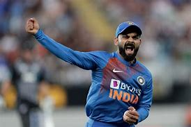

I Am
Srikanth
My favourite hobby is playing cricket.
About
Cricket is a sport which is played between two teams of eleven players each. One team, which is batting, tries to score runs , while the other team is fielding, and tries to prevent this. Runs are scored by hitting the ball, which is thrown by a player from the fielding team to a player from the batting team, across the boundary, or by the batting team's players running between two areas of the field called the batsmen's grounds as many times as possible before the fielding team successfully hits a wicket (set of sticks) in either of the grounds with the ball to get them out.
My favourite players
- Virat Kohli
- Joe Root
- MS Dhoni
- Rohit Sharma
- Jasprit Bumrah
My acheivements

These are some of my trophies that I have won In 2019 We won the cup and tournement. I also won man of the match on the finals and batsmen of the year The 2020 season got cancelled due to covid-19
so in 2021 I captained under-9 and we won the final. As well a that, I also got motm in that as well. In under 11 we won the final but i had to wicket keep for my first times as our usual keeper couldn't come.
I also played in district level for u-9 and captained a few games
Inspiration
Most of my Inspiration comes from Virat Kohli, sachin tendulkar, Dhoni and Bumrah however there are many more people who have inspired me
Some of them also include
Joe Root
Marnus Labushagne
And Ben Stokes